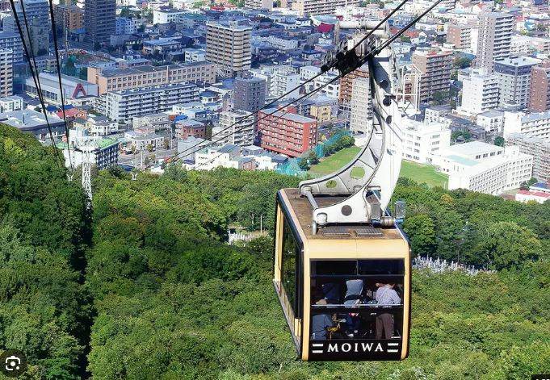
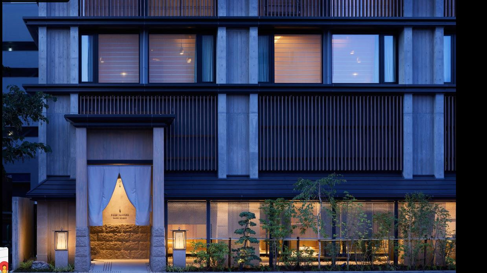

Family Trip · Hokkaido
삿포로 3박 4일 가족여행
청주공항에서 삿포로로 ✈️
대한민국
일본
청주공항
Cheongju Airport
삿포로
Sapporo
✈️
삿포로 여행 시작! ♨️
2026.11.18 — 11.21
↻ 다시 보기
바로 일정 보기

Hokkaido Family Trip
삿포로 3박 4일 가족여행
2026.11.18(수) – 11.21(토) · 3박 4일
👨👩👧👦 가족 4명
🚗 렌터카 여행
♨️ ONSEN RYOKAN 由縁 札幌
일정 보기
전체 지도
오프닝 다시 보기
여행 기본 정보
🏨
숙소
ONSEN RYOKAN 由縁 札幌
✈️
항공
청주 ↔ 신치토세
🚙
현지 이동
현지 렌터카
날씨 · 복장 팁
평균 5.2°C
평균 최고 8.7°C
11월 강수 113.8mm
현재 시점에는 11/18–11/21 일별 예보가 아직 제공되지 않아 일본 기상청 삿포로 11월 평년값을 반영했어요. 출발 7–10일 전 실제 예보를 다시 확인해 주세요. 복장은 코트 또는 경량패딩, 머플러, 미끄럼 방지 신발을 추천합니다.
대표 일정 하이라이트
11/18 · 모이와산 야경
첫날 밤, 삿포로 야경
11/19 · 오타루 운하
오르골당, 르타오, 매직아워
11/20 · 조잔케이
족욕 · 온천 · 초밥
11/21 · 귀국
신치토세공항 출발
숙소 사진

📍 구글맵 열기
🖼 사진 4장 보기
글씨 크기
중간
크게
오늘의 장소 지도
호텔
식당
관광지
주차장
호텔은 모든 날짜의 지도에 항상 표시됩니다. 관광지, 식당, 호텔, 주차장 위치만 표시합니다. 이동 경로와 화살표는 표시하지 않습니다.
날짜별 전체 지도
호텔
식당
관광지
주차장
🏠 홈
🗓 일정
🗺 지도
Photo Gallery
장소 사진
닫기 ✕
← 이전
다음 →